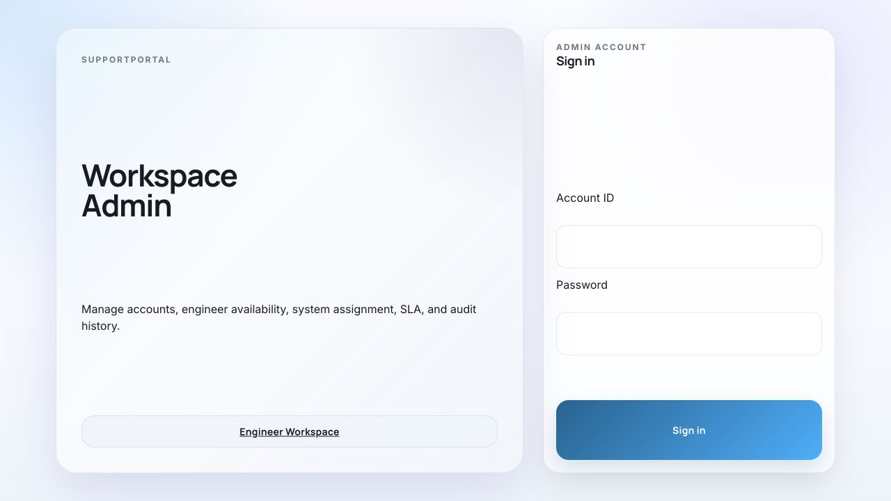

Automation Scope
Fraud 字段规则
明确 account suspension / fraud 流程中哪些 fields 为 required、哪些为 optional，避免把无法提供的字段变成无限阻塞条件。
Phase 2 Delivery Record
会议第一阶段对应实际 Phase 2：先把 account verification、detailed invoice 和 enablement 三类确定性 case 做稳，再用真实流量验证分层路由、字段收集与自动化覆盖率。
01 / Delivery plan
会议第一阶段对应实际 Phase 2。未完成计划默认展开；已完成功能默认折叠并保留真实 PR。分类筛选只改变当前视图，不改变交付状态。
明确 account suspension / fraud 流程中哪些 fields 为 required、哪些为 optional，避免把无法提供的字段变成无限阻塞条件。
维护多套受控的问候、表达、签名和语气模板，在保持自然口吻的同时统一敏感表达边界。
展示有多少百分比的真实 case 能被解决，并结合 route accuracy、失败原因和人工抽查决定是否扩充 automation category。
以全部 /account ticket 为分母，展示被 route 为 Automated 的 case 数量、占比和明细；不把 routed-to-Automated 误写成已解决。
持久化每次 /account route 的 stage、policy、fallback、Router Prompt version 和实际 Prompt；历史缺失 snapshot 时明确标记 unavailable。
支持多 Persona 的 Draft、Publish、版本历史、稳定 ticket 分配和创建新版本式 rollback，并用于 /account 客户回复。
Admin 只查看项目根 .env 的合法配置名；API 与 UI 均不返回 value 或任何 value-derived metadata。
/account 依次使用 Intent Classifier、Agora Router 和 Automation Router，同时记录大标签与小标签；mixed、unclear、低置信度和未注册 Automation 均进入 Human Review，/client 继续使用原共享 Router。
Automation 已覆盖 account verification、detailed invoice 和 enablement；Enablement 使用独立 handler 收集 App ID、发送内部开通邮件并接收 Outlook 处理结果。
Admin 以只读目录展示 /account 的 Intent Classifier、Agora Router、Automation Router 及原 Client Router Prompt，并继续展示 Client、Engineer、Guardrail Agent、正式 skill 与 MCP 状态。
同一规范化缺失字段在一个 ticket 内最多询问一次；客户未回答时停止重复索取，保留现有上下文并进入人工关注状态。
仅命中已注册 Automation handler 的 /account 消息创建持久化 scheduled reply，随机延迟 6–10 分钟后发布到 account thread；非 Automation 只记录分类标签。
PBKDF2 密码、signed access token、Admin/Engineer RBAC、受认证 WebSocket，以及 Admin 创建账号能力。
/workspace/admin 提供 available/unavailable 开关，可选 reason，并记录 Admin 操作审计。
从 Admin 标记 available 的 engineer 中按 round-robin 派发；manual claim endpoint 已停用并返回 410。
assigned 后立即计时；SLA 到期或 engineer unavailable 时转派给下一个 available engineer，并保留 previous assignee。
Client Ticket 使用 open / communicating / escalated / investigating / resolved；Engineer Case assignment 只使用 pending / assigned / resolved。
派单使用 transaction、row lock、assignment_version compare-and-set；状态与事件同事务写入，防止重复派发。
rollout counter 只统计 Not automated case；当前每第 10 单创建 Engineer Case，并可通过 env 切换到 100%。
新请求不生成 response token/link；worker 读取回复正文和 PDF 附件，再生成受 guardrail 约束的客户跟进。
重复 webhook 安全 replay 原响应，不重复计数、不重复创建 Engineer Case，也不重复发送内部邮件。
统一展示 Client Ticket、Engineer Case、SLA、dispatch、availability、Billing automation 和 guardrail 指标。
新 Zendesk case 依次使用传入的 external_id、兼容 ticket ID 或 Zendesk source URL 中的 ticket number；仅在三者都缺失时生成内部 ID。列表与详情统一展示来源 ticket #，历史主键不迁移。
Engineer multi-agent 默认关闭，Workspace 生产流程保持 guardrail-only，不阻塞 Billing、派单或 final approve。
transaction advisory lock 串行化并发 migration；独立 migration/runtime role 自动授予 schema、table、sequence 权限。
修复独立 PostgreSQL migration 环境中的冲突列歧义，确保首次 Admin 建立、后续 upsert 与 audit 可执行。

02 / Endpoint inventory
Active UI、Phase 2 API、兼容 backend contract、disabled 和 legacy 明确分层，避免把旧 /engineer UI 与仍然 active 的 /api/engineer/* 混为一谈。
| 分类 | Endpoint | 状态 | 用途 / 边界 | Phase 2 PR |
|---|---|---|---|---|
| Active UI | /account | Active | 客户工单入口；所有 ticket 先分类，AI 回复持久化延迟 6–10 分钟后仅发布到 account thread。 | #609 |
| Active UI | /workspace | Active | Engineer Case 正式处理入口，仅展示系统派发给当前 engineer 的 case。 | #609 |
| Active UI | /workspace/admin | Active | 账号、availability、派单、SLA、审计和 metrics 管理入口。 | #609 |
| Workspace auth | POST /api/workspace/auth/loginGET /api/workspace/meWS /ws/workspace | Active | Workspace 登录、当前账号和受认证实时更新。 | #609 |
| Engineer Case | GET /api/workspace/casesGET /api/workspace/cases/{id} | Active | 按 assignment status 和当前 engineer 权限读取 Engineer Case。 | #609 |
| Engineer actions | POST /api/workspace/cases/{id}/actionPOST /api/workspace/cases/{id}/investigation/messagesPOST /api/workspace/cases/{id}/investigation/confirmation | Active | 处理、回复、approve、final approve 与调查消息主链路。 | #609 |
| Admin accounts | GET/POST /api/workspace/admin/accountsPATCH /api/workspace/admin/engineers/{id}/availability | Active | Admin 创建账号、切换 availability，并写入审计。 | #609#612 |
| Admin dispatch | POST /api/workspace/admin/dispatchPOST /api/workspace/admin/reassign-duePOST /api/workspace/admin/cases/{id}/assignment | Active | 系统派单、SLA 到期转派和带版本保护的 Admin 人工调整。 | #609 |
| Admin observability | GET /api/workspace/admin/auditGET /api/workspace/admin/metrics | Active | 操作审计和 Phase 2 运行指标。 | #609 |
| Account Cases | GET /api/account/casesGET /api/account/cases/{id}POST /api/account/cases/{id}/reply | Active | Account Case 列表、详情、客户补充信息、scheduled AI 状态与逐消息 timestamp；旧 billing-tickets 路径保留兼容。 | #609 |
| Account review | POST /api/account/cases/{id}/route-correctionPOST /api/account/cases/{id}/route-reviewGET /api/account/route-errors/summary | Active | 误路由纠正、人工 review 和 route error 汇总；旧 billing-tickets 路径保留兼容。 | #609 |
| Engineer backend | /api/engineer/* | Contract | 仍是 active backend contract；新 Workspace UI 不再直接依赖这组 endpoint。 | #609 |
| Manual claim | POST /api/engineer/tickets/{id}/claim | Disabled | 返回 410；禁止与系统派单并行写 assignee。 | #609 |
| Feature-gated | POST /api/engineer/tickets/{id}/multi-agent/run | Disabled | 9/1 主链路默认关闭；未启用时返回 404。 | #609 |
| Legacy UI | /engineer | Legacy | 旧 Engineer UI；对外正式入口已迁移到 /workspace。 | #609 |
| Legacy UI | /login/client2/clienttest/response | Legacy | 历史兼容入口；新 Billing 流程不再生成 response link。 | #609 |
| Removed prototype | /assignment | Legacy | prototype 已移除；能力由 /workspace/admin 接管。 | #609 |
03 / Validation
Phase 2 先证明确定性 case 能被正确识别、有限追问、自然回复并完成内部动作，再根据真实覆盖率决定扩类。
接收真实 ticket，保留 external ID 与幂等判断。
只进入 fraud、detailed invoice 或 enablement。
按 required / optional 规则收集字段，限制重复追问。
随机 6–10 分钟，使用受控人设 Prompt 模板。
统计解决率、route accuracy 与失败原因，决定是否扩类。
Slack 工程师处理进入 Phase 3；Engineer multi-agent 与 AgentRelay 自主调查继续作为后续长期计划。Phase 2 不提前扩展到开放式技术问题。